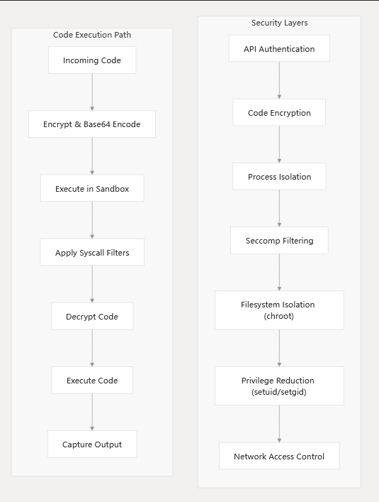
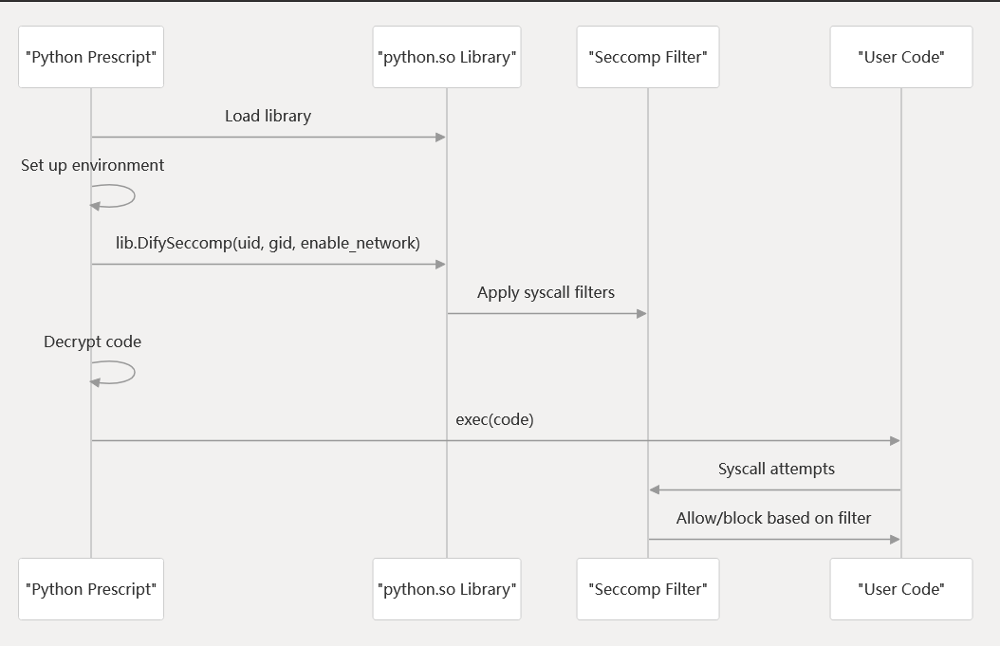

Security Model #
Security Architecture Overview #

Syscall Filtering with Seccomp #
Python Seccomp Implementation

实现 #
type PythonRunner struct {
runner.TempDirRunner
}
//go:embed prescript.py
var sandbox_fs []byte
func (p *PythonRunner) Run(
code string,
timeout time.Duration,
stdin []byte,
preload string,
options *types.RunnerOptions,
) (chan []byte, chan []byte, chan bool, error) {
configuration := static.GetDifySandboxGlobalConfigurations()
// initialize the environment
untrusted_code_path, key, err := p.InitializeEnvironment(code, preload, options)
if err != nil {
return nil, nil, nil, err
}
// capture the output
output_handler := runner.NewOutputCaptureRunner()
output_handler.SetTimeout(timeout)
output_handler.SetAfterExitHook(func() {
// remove untrusted code
os.Remove(untrusted_code_path)
})
// create a new process ### 执行python代码的进程
cmd := exec.Command(
configuration.PythonPath,
untrusted_code_path,
LIB_PATH,
key,
)
cmd.Env = []string{}
cmd.Dir = LIB_PATH
if configuration.Proxy.Socks5 != "" {
cmd.Env = append(cmd.Env, fmt.Sprintf("HTTPS_PROXY=%s", configuration.Proxy.Socks5))
cmd.Env = append(cmd.Env, fmt.Sprintf("HTTP_PROXY=%s", configuration.Proxy.Socks5))
} else if configuration.Proxy.Https != "" || configuration.Proxy.Http != "" {
if configuration.Proxy.Https != "" {
cmd.Env = append(cmd.Env, fmt.Sprintf("HTTPS_PROXY=%s", configuration.Proxy.Https))
}
if configuration.Proxy.Http != "" {
cmd.Env = append(cmd.Env, fmt.Sprintf("HTTP_PROXY=%s", configuration.Proxy.Http))
}
}
if len(configuration.AllowedSyscalls) > 0 {
cmd.Env = append(cmd.Env,
fmt.Sprintf("ALLOWED_SYSCALLS=%s",
strings.Trim(strings.Join(strings.Fields(fmt.Sprint(configuration.AllowedSyscalls)), ","), "[]"),
),
)
}
err = output_handler.CaptureOutput(cmd)
if err != nil {
return nil, nil, nil, err
}
return output_handler.GetStdout(), output_handler.GetStderr(), output_handler.GetDone(), nil
}
func (p *PythonRunner) InitializeEnvironment(code string, preload string, options *types.RunnerOptions) (string, string, error) {
if !checkLibAvaliable() {
// ensure environment is reversed
releaseLibBinary(false)
}
// create a tmp dir and copy the python script
temp_code_name := strings.ReplaceAll(uuid.New().String(), "-", "_")
temp_code_name = strings.ReplaceAll(temp_code_name, "/", ".")
/// 把prescript.py中的placeholder都替换掉
script := strings.Replace(
string(sandbox_fs),
"{{uid}}", strconv.Itoa(static.SANDBOX_USER_UID), 1,
)
script = strings.Replace(
script,
"{{gid}}", strconv.Itoa(static.SANDBOX_GROUP_ID), 1,
)
if options.EnableNetwork {
script = strings.Replace(
script,
"{{enable_network}}", "1", 1,
)
} else {
script = strings.Replace(
script,
"{{enable_network}}", "0", 1,
)
}
script = strings.Replace(
script,
"{{preload}}",
fmt.Sprintf("%s\\n", preload),
1,
)
// generate a random 512 bit key
key_len := 64
key := make([]byte, key_len)
_, err := rand.Read(key)
if err != nil {
return "", "", err
}
/// 代码加密
// encrypt the code
encrypted_code := make([]byte, len(code))
for i := 0; i < len(code); i++ {
encrypted_code[i] = code[i] ^ key[i%key_len]
}
/// 代码做base64
// encode code using base64
code = base64.StdEncoding.EncodeToString(encrypted_code)
// encode key using base64
encoded_key := base64.StdEncoding.EncodeToString(key)
code = strings.Replace(
script,
"{{code}}",
code,
1,
)
untrusted_code_path := fmt.Sprintf("%s/tmp/%s.py", LIB_PATH, temp_code_name)
err = os.MkdirAll(path.Dir(untrusted_code_path), 0755)
if err != nil {
return "", "", err
}
err = os.WriteFile(untrusted_code_path, []byte(code), 0755)
if err != nil {
return "", "", err
}
return untrusted_code_path, encoded_key, nil
}
import ctypes
import os
import sys
import traceback
# setup sys.excepthook
def excepthook(type, value, tb):
sys.stderr.write("".join(traceback.format_exception(type, value, tb)))
sys.stderr.flush()
sys.exit(-1)
sys.excepthook = excepthook
lib = ctypes.CDLL("./python.so")
lib.DifySeccomp.argtypes = [ctypes.c_uint32, ctypes.c_uint32, ctypes.c_bool]
lib.DifySeccomp.restype = None
# get running path
running_path = sys.argv[1]
if not running_path:
exit(-1)
# get decrypt key
key = sys.argv[2]
if not key:
exit(-1)
from base64 import b64decode
key = b64decode(key)
os.chdir(running_path)
{{preload}}
lib.DifySeccomp({{uid}}, {{gid}}, {{enable_network}})
code = b64decode("{{code}}")
def decrypt(code, key):
key_len = len(key)
code_len = len(code)
code = bytearray(code)
for i in range(code_len):
code[i] = code[i] ^ key[i % key_len]
return bytes(code)
code = decrypt(code, key)
exec(code)